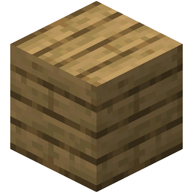
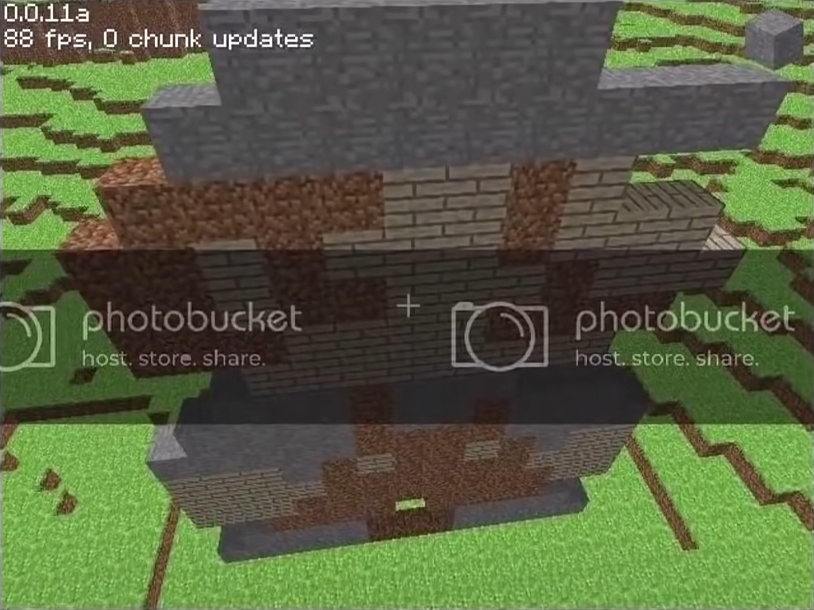

HTML <!DOCTYPE html> <html> <head> <meta charset="UTF-8"> <title>Document</title> <link rel="stylesheet" href="style.css"> <link rel="stylesheet" media="screen" href="https://fontlibrary.org//face/minecraft" type="text/css"/> <link rel="stylesheet" href="https://fonts.googleapis.com/css2?family=Dancing+Script&display=swap"> </head> <body id="myElement"> <input type="checkbox" id="change"> <header> <label for="change" class="light-dark"></label> <h1>История создания игры</h1> </header> <main> <nav class="menu"> <a class="scroll" href="#CG">CaveGame</a> <a class="scroll" href="#MoftS">Minecraft<small>OrderOfTheStone</small></a> <a class="scroll" href="#M">Minecraft</a> <a class="scroll" href="#C">Classic</a> <a class="signIn" href="_reg.html"><small>Редактировать</small></a> </nav> <nav class="menu_small_icon"> <div class="stick"></div> <div class="stick"></div> <div class="stick"></div> </nav> <nav class="menu_small_item"> <a class="scroll" href="#CG">CaveGame</a> <a class="scroll" href="#MoftS">Minecraft<small>OrderOfTheStone</small></a> <a class="scroll" href="#M">Minecraft</a> <a class="scroll" href="#C">Classic</a> <a class="signIn" href="_reg.html"><small>Редактировать</small></a> </nav> <article class="block"> <h1 id="CG" class="CaveGame">Cave Game</h1> <h2>10 мая 2009</h2> <p>Всё ещё мало кому известный программист <b>Маркус Персон</b> публекует свою очередную разработку - Cave Game.</p> <p>В той версии игры карта была размером 256x256 блоков и состояла из булыжника и травы, в глубинах мира можно найти пещеры. Уже есть простая механика света и чанки.</p> <img class="blockimg" src="images/CaveGame.png" alt="Cave Game"> <p><b>13 мая</b> выходит первое обновление - <b>rd-132211</b></p> <ul> <li>Игра стала более стабильной</li> <li>Добавлены установка и разрушение блоков</li> <li>Генератор мира стал более гладким и менее случайным</li> </ul> <div></div> <p>Спустя час выходит ещё одно обновление - <b>rd-132328</b></p> <p>Главным нововведением стал человек - первый моб в игре. Он спавнился после генерации мира и рандомно бегал по карте с очень странной анимацией движения. Так же при нажатии <b>R</b>, игрок перемещался в случайную точку. </p> <img class="blockimg" src="images/Human_Mob.png" alt="Человек"> </article> <article class="block"> <h1 class="CaveGame"><s>Cave Game</s></h1> <h1 id="MoftS" class="Minecraft">Minecraft <small>Order of the Stone</small></h1> <p>Следующая версия не заставила себя долго ждать и вышла почти в полночь 15 мая - <b>rd-20090515</b></p> <p class="inbl">Человека теперь можно призвать нажав кнопку <b>G</b>, а в центре экрана красуется незаметный на первый взгляд, но важный для игры крестик.</p> <div></div> <h2>16 мая 2009</h2> <p>За одни сутки было выпущено целых 11 новых версий! Но обо всём по порядку.</p> <p>Почти в час ночи по Шведскому времени выходит <b>rd-160052</b>. На тот момент это самое большое обновление, ибо добавлено 3 новых блока: земля, камень и доски. Выбирать блоки можно нажатием цифр от 1 до 4. При ломании блока, видны частицы. Земля превращается в траву под действием света. Текстура самой травы изменена - она стала чуточку ярче.</p> <img class="inlimg" src="images/земля.png" alt="земля"> <img class="inlimg" src="images/камень.png" alt="камень">  </article> <article class="block"> <p>Игра вновь переименована и теперь называется просто -</p> <h1 id="M" class="Minecraft">Minecraft</h1> <p>Днём Нотч выпускает <b>rd-161348</b>, в которой был добавлен сажанец, однако дерево пока вырасти не могло. Была изменена текстура досок, а в файлах игры можно найти текстуры лавы и воды.</p> <p>Обновление получило генератор мира. Теперь в Майнкрафте можно найти скалы, хотя они и были слишком резкими.</p> <img class="blockimg" src="images/Скалы.png" alt="скалы"> <div></div> <p>Между 16-17 часами Нотч выпускает 4 новых версии, которые обычно называют <b>"Minecraft pre-classic alpha"</b>.</p> <ul> <li><b>rd-161607</b></li> <li><b>rd-161616</b></li> <li><b>rd-161625</b></li> <li><b>rd-161648</b></li> </ul> <p>Эта линия версий предназначалась для закрытого тестирования и была выслана лишь нескольким самым активным игрокам.</p> <p>Точно сказать, что дабавили в этих версиях сложно, так как все они были утеряны, а упоминания о них в интернете почти нет. Если верить <b>Minecraft Wiki</b>, ничего кроме баг-фиксов и технических изменений там не было.</p> </article> <article class="block"> <h2>Следующий период в истории называется -</h2> <h1 id="C" class="Classic">CLASSIC</h1> <p>Его разделяют на 4 этапа:</p> <ul> <li>Early classic creative</li> <li>Multiplayer test</li> <li>Survival test</li> <li>Late classic creative</li> </ul> <div></div> <h2>Early classic creative</h2> <p>Как понятно из названия, на этом этапе был лишь творческий режим. Первая версия вышла всё того же 16 мая в 16:52.</p> <p>Наконец-то названия версий преобрели человеческий вид, она называлась <b>0.0.1a</b>. Единственым изменением стал номер версии, который отображался в углу экрана.</p> <p>За вечер того же дня Нотч выпускает ещё 4 обновления:</p> <ul> <li><b>0.0.2a</b></li> <li><b>0.0.3a</b></li> <li><b>0.0.4a</b></li> <li><b>0.0.9a</b></li> </ul> <p>В основном в них были добавлены фиксы багов.</p> <p>На следующий день было выпущено 2 мелких обновления, которые кроме фиксов ошибок ничего не принесли. Это были - <b>0.0.10a</b> и <b>0.0.11a</b></p> <p>В этот день игру разместили на форуме TigSource, что принесло ей некоторый хайп. Пользователи оценили её потенциал, начав делиться своими постройками и пиксель артами.</p>  <div></div> <p>Так же в этот день был создан первый логотип игры, который представлял собой надпись "Minecraft" из булыжника.</p> <img class="blockimg" src="images/логотип1.png" alt="логотип"> <div></div> <p><b>19 мая</b> Нотч делится скриншотом, на котором изображено озеро лавы.</p> <p>А уже на следующий день выходит версия <b>0.0.12a</b>. В этой версии были добавлены все жидкости Майнкрафта: <b>лава</b> и <b>вода</b>. Впервые появился <b>бедрок</b>, который тогда упоминался как неразрушаемый камень. Как и сейчас, он был расположен в нижней части карты, а сама карта стала значительно больше. Теперь она пердставляла собой остров, окружённый бесконечным океаном.</p> <p>Физика воды была весьма странной - она заполняла любое пространство рядом с собой. Так же в этой версии появилась пауза, а нажатие <b>N</b> сохраняло мир.</p> </article> </main> <footer> <p>@Minecraft</p> </footer> <script src="https://ajax.googleapis.com/ajax/libs/jquery/3.1.1/jquery.min.js"></script> <script src="anime.js"></script> <script src="script.js"></script> </body> </html> Сохранить
CSS :root{ --color1:black; --color2:white; --kartinka:url(images/moon.png); } input:checked~*{ --color1:white; --color2:rgb(29, 29, 29); --kartinka:url(images/sun.png); } body>input{ display: none; } header>label{ display: flex; justify-content: flex-end; background-image: var(--kartinka); background-size: cover; background-repeat: no-repeat; width: 50px; height: 50px; margin: 1%; } body{ margin: 0; background-image: url(images/tile_background.png); background-size: cover; background-repeat: no-repeat; background-attachment: fixed; font-size: 25px; } main{ padding: 0; } header{ background-position: center center; background-image: url(images/maineheader.jpg); background-size: cover; background-repeat: no-repeat; background-attachment: fixed; padding: 1px 0 1px 0; } header>h1{ font-family: Andale Mono, monospace; color: white; font-size: 75px; padding: 30% 3% 0; text-shadow: 0 15px 30px black, 0 -15px 30px blue; } main>nav{ font-family: Andale Mono, monospace; background-color: black; margin: 0; padding: 10px 30px; display: flex; justify-content: space-around; position: sticky; top: 0; flex-wrap: wrap; } nav>a{ text-decoration:none; color: white; margin: 20px; } .signIn{ color: rgb(85, 70, 173); } nav>a:hover{ color: rgb(126, 63, 63); } nav>a:active{ color: red; } .block{ background-color: var(--color2); margin: 10%; padding: 5% 5%; border-radius: 10px; font-family: Andale Mono, monospace; color: var(--color1); } .blockimg{ margin: 0 10%; width: 80%; border-radius: 5px; } .CaveGame{ color: purple; font-size: 60px; font-family: 'Dancing Script'; } .Minecraft{ color: #5FBE4B; font-size: 60px; font-family: 'MinecrafterAltRegular'; font-weight: normal; font-style: normal; } .Classic{ color: black; font-size: 60px; font-family: 'Dancing Script'; } .inlimg{ display: inline-block; margin: 0 2%; width: 25%; border-radius: 5px; } .inbl{ display: inline-block; width: 65%; text-align: justify; } div{ margin: 100px; } input[type=text]:focus, input[type=password]:focus { background-color: #ddd; outline: none; } textarea { width: 100%; white-space: nowrap; } hr { border: 1px solid #f1f1f1; margin-bottom: 25px; } .menu_small_icon{ display: none; } .stick { width: 70px; height: 5px; background: rgb(255, 255, 255); margin: 15px; } .menu_small_item { display: none; transform: translateX(-100%); top: 95px; } .error { color: red; } /*article>p, article>h1, article>h2, article>h3, article>ul { transform: translateX(-200%); } .inlimg { transform: translateX(600%); } img { transform: translateX(200%); }*/ footer{ background-position: center center; background-image: url(images/Minefooter.jpeg); background-size: cover; background-repeat: no-repeat; box-shadow: inset 0px 0px 30px 30px rgba(0, 0, 0, 1); padding: 0 0 1px 0; } footer>p{ font-family: Andale Mono, monospace; font-size: 22px; color: white; padding: 5% 5%; text-shadow: 5px 5px 10px black; margin: 0 0 0 0; } @media (min-width: 767px) and (max-width: 1199px) { .block{ margin: 5%; } } .light-dark{ position: fixed; z-index: 1; } @media (max-width: 767px) { .block { margin: 0; border-radius: 0; } .menu_small_icon{ display: block; padding: 10px 0 10px 50px; } .menu_small_item { display: flex; flex-direction: column; } .menu{ display: none; } } Сохранить